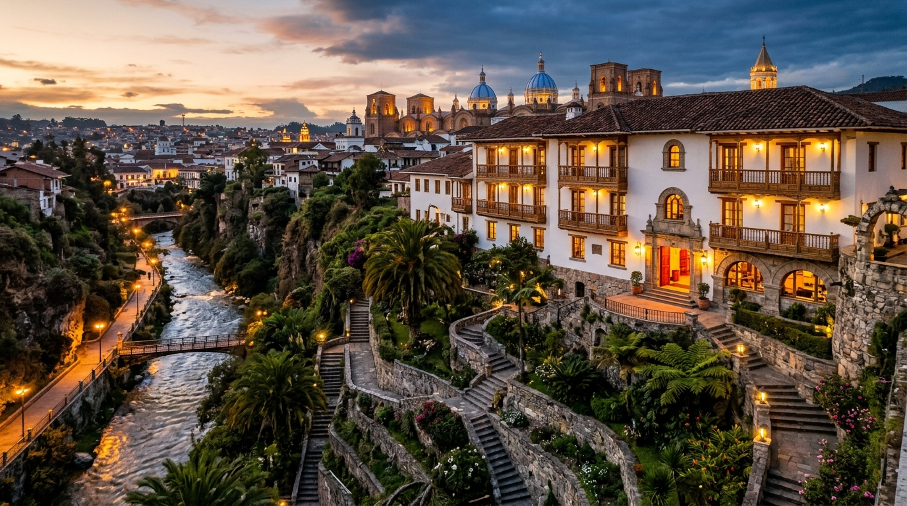
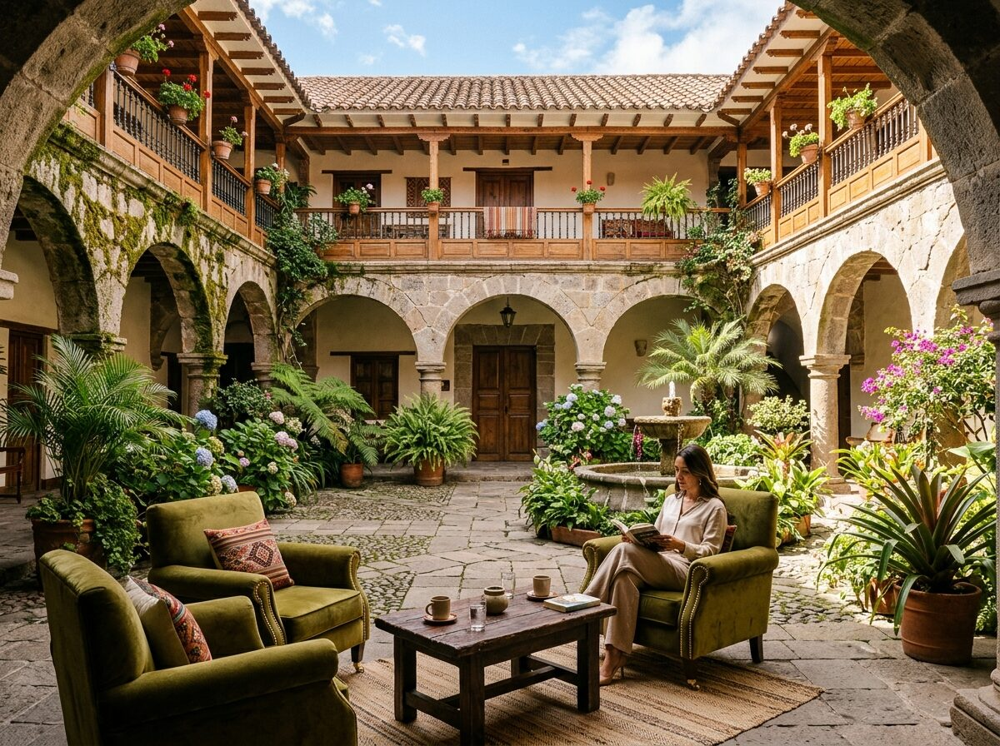
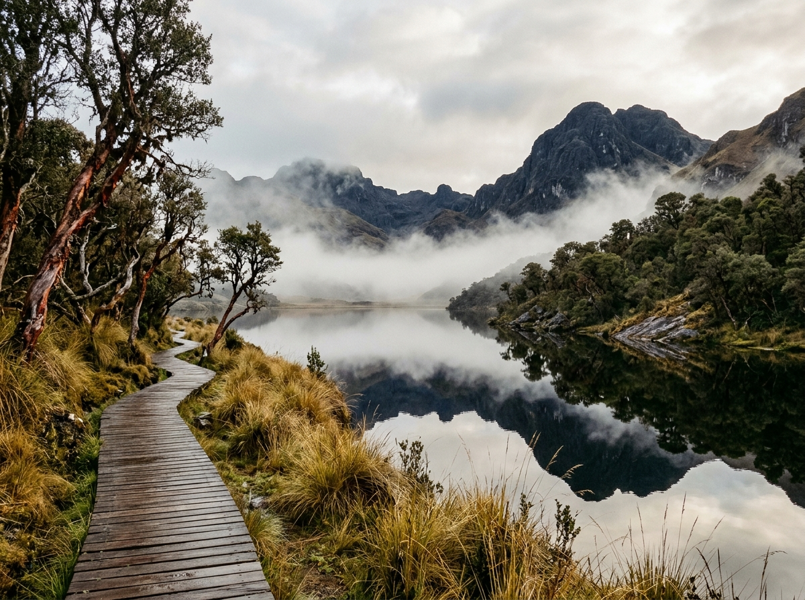
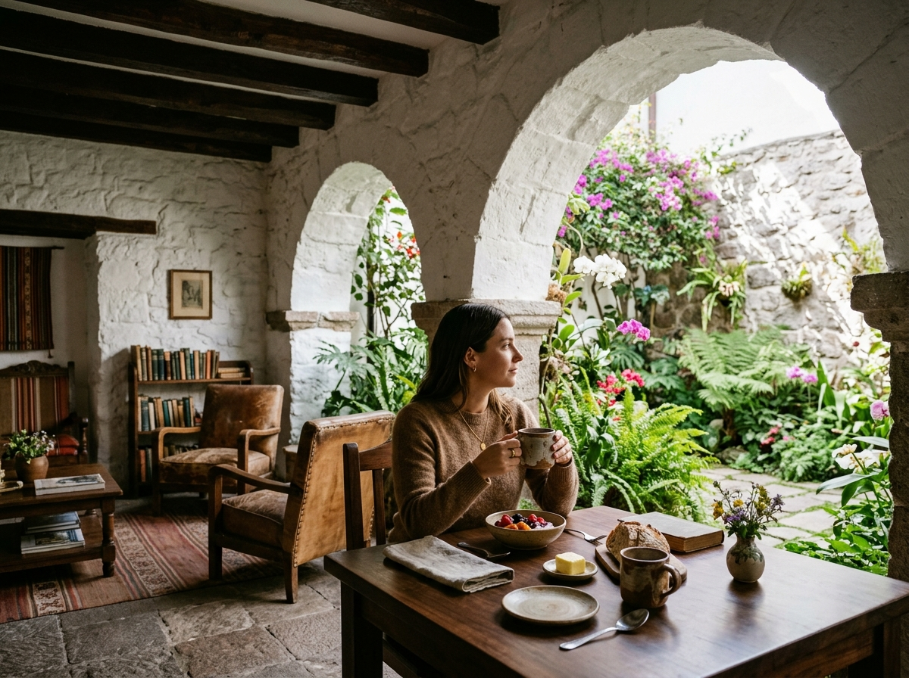
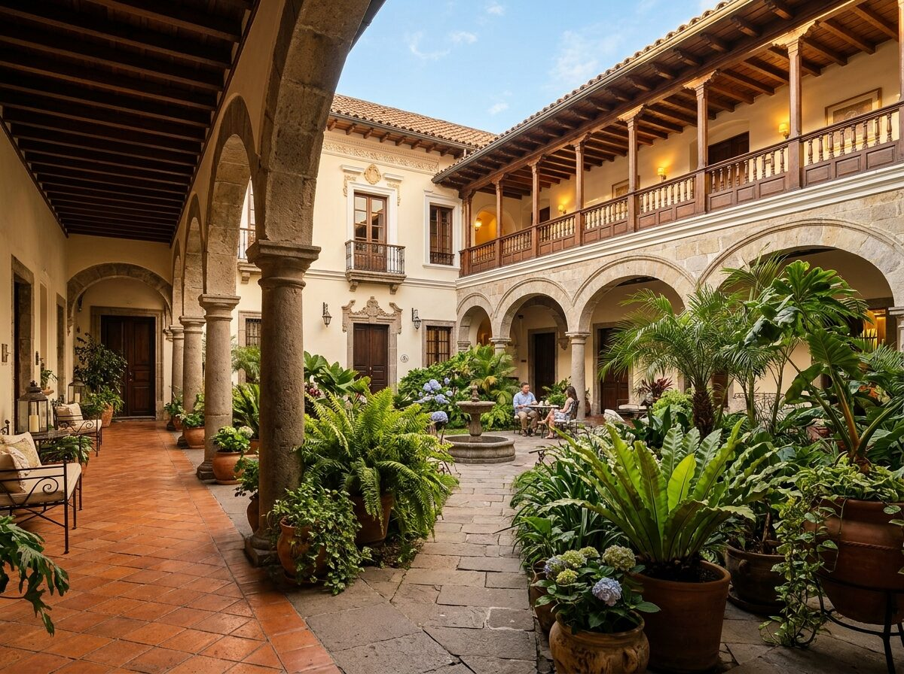
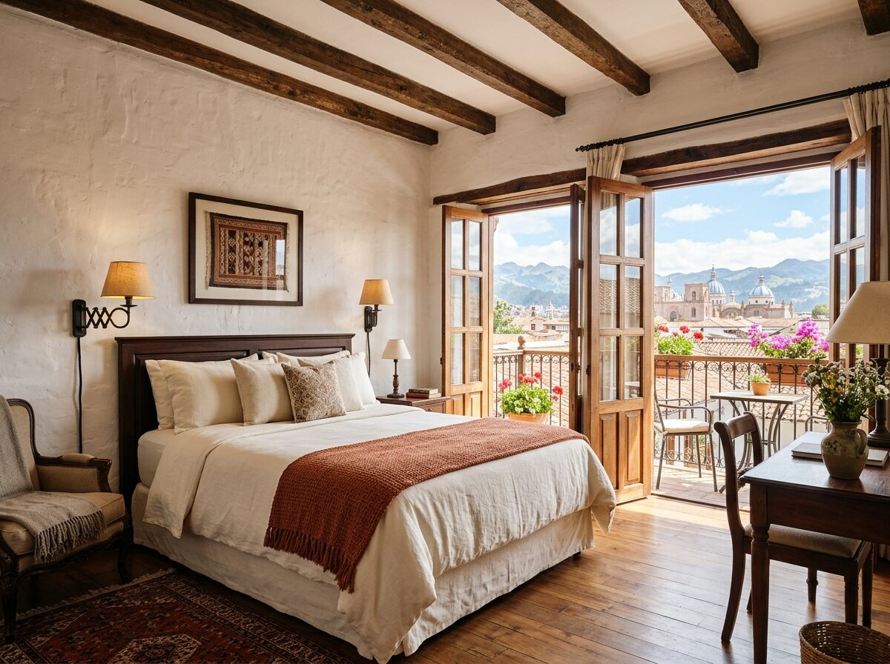
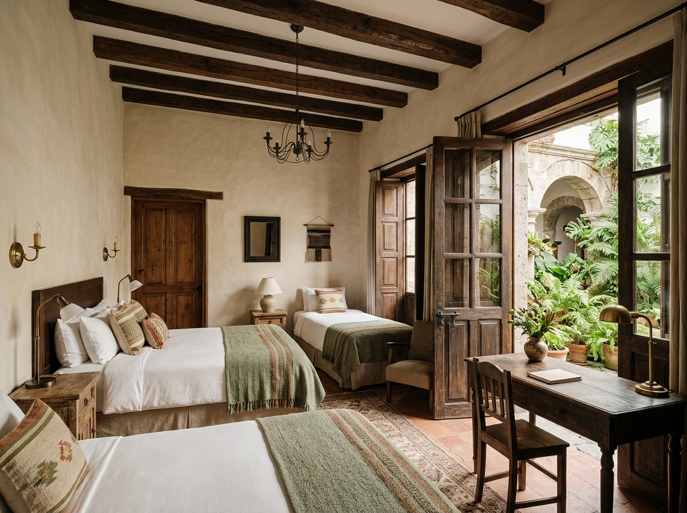
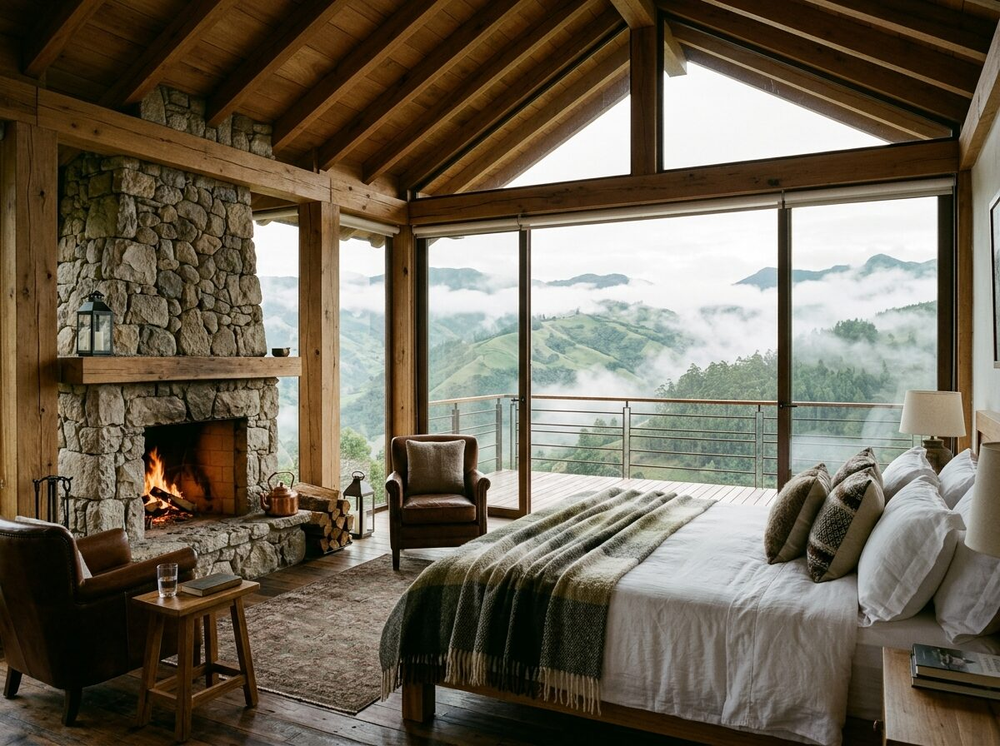

Desayuno andino diario
Incluido en todas las habitaciones. Servicio de mesa en el salón colonial o en las galerías del jardín.

El Barranco del Tomebamba Cuenca, Ecuador
Casona republicana de adobe, piedra andina y balcones de madera restaurada como refugio boutique de escala íntima. Propuesta demostrativa diseñada por AV·STUDIO para hoteles con reserva directa sin comisiones.
01 · La casona y su arquitectura
Casa del Barranco nace como ejercicio editorial de hospitalidad en el entorno arquitectónico de El Barranco: construcciones escalonadas que descienden hacia el cauce del Tomebamba conservando sus patios claustrales y galerías de madera.
En lugar de una recepción impersonal, cada espacio privilegia la luz natural de la sierra austral, el abrigo acústico de muros anchos de adobe y una transición serena entre el jardín interior y el trazado peatonal del Centro Histórico.

02 · Alojamiento de ejemplo (USD)
Tres tipologías de ejemplo con capacidad declarada, características espaciales y tarifas nocturnas referenciales en dólares estadounidenses.

03 · Cuenca y su entorno
Recorridos sugeridos para descubrir el patrimonio fluvial, los oficios del Azuay y los ecosistemas de páramo con horarios flexibles y guía local coordinada.
Lectura urbana de casonas colgantes, escalinatas tradicionales y orillas del río Tomebamba al amanecer o al caer la tarde.
Recorrido interpretativo entre bosques de quinua (polylepis) y lagunas de páramo sobre los 3.900 metros de altitud.
Visita de taller para conocer el tejido tradicional del sombrero fino y el trabajo en plata de orfebres locales.
Preparaciones con grano ecuatoriano de Loja y Azuay, quesillo fresco, fruta de temporada y pan recién horneado en el salón del patio.
04 · Hospitalidad y detalle
Diseñado para estadías tranquilas tanto de viaje cultural como de trabajo remoto, con atención cercana y horarios claros.
Incluido en todas las habitaciones. Servicio de mesa en el salón colonial o en las galerías del jardín.
Conectividad estable en suites y escritorios de madera sólida ideales para quienes trabajan desde Cuenca.
Calefacción discreta en habitaciones, textiles de lana andina y chimenea encendida en áreas sociales al anochecer.
Coordinación directa desde el Aeropuerto Mariscal Lamar y resguardo de equipaje antes del ingreso o tras el check-out.

05 · Recorrido visual




06 · Ubicación y reserva directa
El panel derecho valida las fechas seleccionadas y prepara una consulta directa por WhatsApp hacia Anderson Vallejo (AV·STUDIO) como demostración interactiva de reserva hotelera sin comisiones de plataforma.
Calle Larga y Bajada del Padrón · Sector El Barranco del Tomebamba
Cuenca, Azuay, Ecuador
Nota de demostración: Casa del Barranco es una marca ficticia creada por AV·STUDIO. No procesa pagos en línea ni representa reservas hoteleras reales.